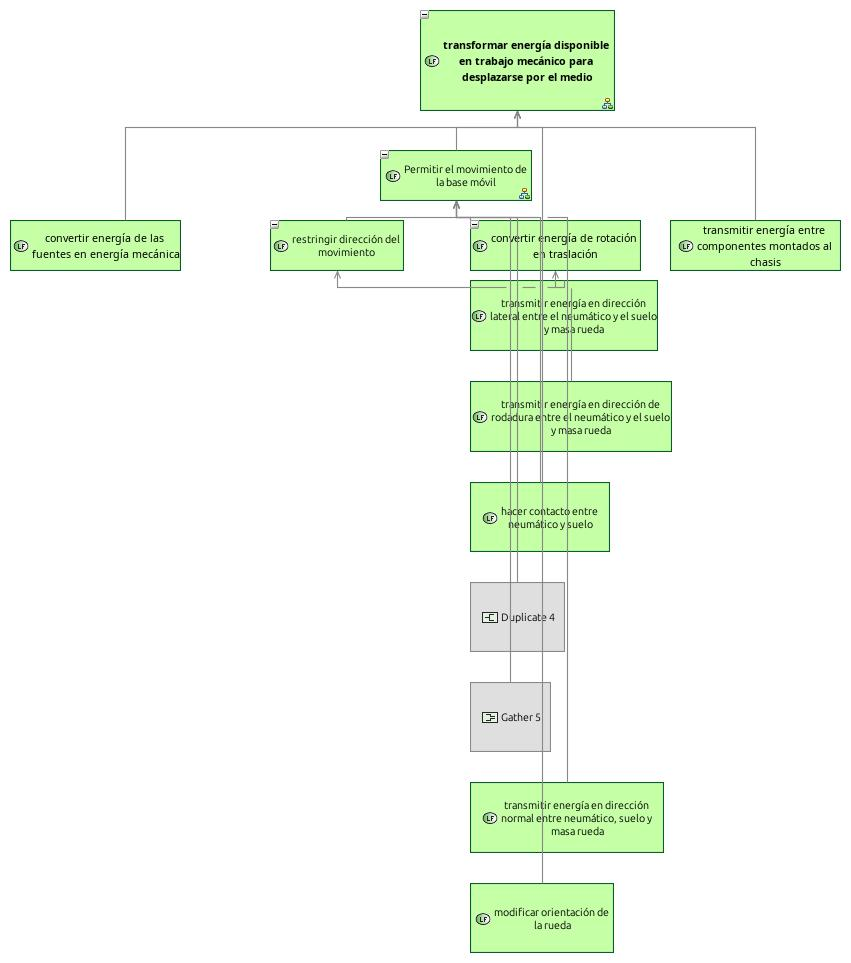
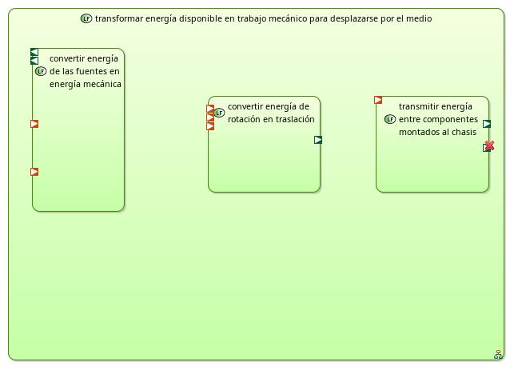

transformar energía disponible en trabajo mecánico para desplazarse por el medio
LogicalFunction
02 - Materials Manipulation Mobile Robot > 02 - Materials Manipulation Mobile Robot > Logical Architecture > Logical Functions > Root Logical Function > transformar energía disponible en trabajo mecánico para desplazarse por el medioNo description.
Allocating Component
Incoming Internal Functional Exchanges
| Exchange | Involving functional chains | Allocating component Exchanges | Distant Port | Source | Target | Description | Allocated Exchange Items | Realized Functional Exchange | Realizing Functional Exchange |
|---|---|---|---|---|---|---|---|---|---|
Outgoing Internal Functional Exchanges
| Exchange | Involving functional chains | Allocating component Exchanges | Distant Port | Source | Target | Description | Allocated Exchange Items | Realized Functional Exchange | Realizing Functional Exchange |
|---|---|---|---|---|---|---|---|---|---|
Owned diagrams
LFBD transformar energa disponible en trabajo mecnico para desplazarse por el medio

LDFB transformar energa disponible en trabajo mecnico para desplazarse por el medio
